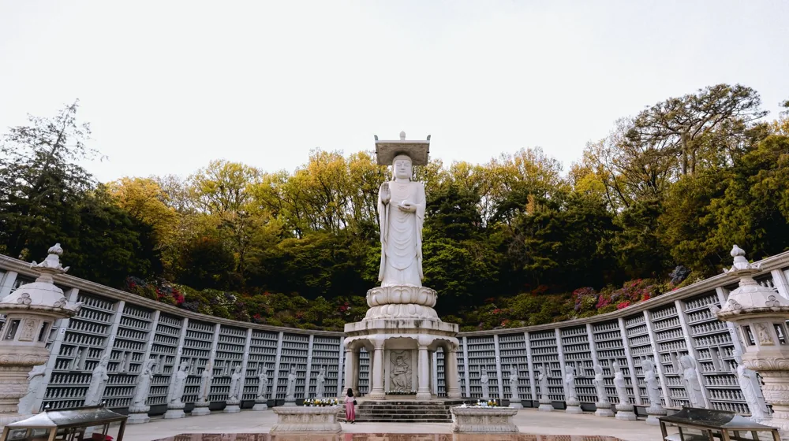

디지털 노마드 사찰, 직접 경험해보니 어땠을까? 성공적인 체험을 위한 꿀팁과 주의사항
사진: ki-mock koo / Pexels (무료 이미지, 출처 표기)
사찰에서 디지털 노마드 생활, 정말 가능할까?

디지털 노마드(Digital Nomad)는 원격 근무를 하며 자유롭게 이동하는 사람을 뜻합니다. 최근 이들이 도시를 벗어나 사찰이라는 고즈넉한 공간에서 일과 휴식을 병행하는 것에 대한 관심이 높아지고 있습니다. 과연 사찰에서 업무를 원활히 처리하며 정신적인 평온도 얻을 수 있을까요?
결론부터 말하면 '충분히 가능하지만 준비가 필요하다'입니다. 사찰마다 환경이 다르지만, 한국불교문화사업단에 따르면 많은 사찰이 방문객 편의를 위해 기본적인 인터넷과 전원 시설을 갖추고 있습니다. 중요한 것은 본인이 선택할 사찰의 구체적인 환경을 미리 확인하는 것입니다.
사찰 체험 전 반드시 확인해야 할 체크리스트
성공적인 디지털 노마드 사찰 체험을 위해서는 사전 준비가 필수입니다. 아래 체크리스트를 통해 필요한 사항을 점검해보세요.
- 예약 유형 확인: 사찰에서 제공하는 템플스테이(사찰에서 생활하며 불교 문화와 수행을 체험하는 프로그램)는 정해진 일정이 있어 업무에 방해가 될 수 있습니다. 단순 숙박 형태로 조용히 머무를 수 있는 '자유형 템플스테이' 또는 일반 숙박 시설을 운영하는 사찰을 선택하는 것이 좋습니다.
- 인터넷 및 전원 환경: 노트북 등 전자기기 사용에 필수적인 요소입니다. 예약 전 사찰에 Wi-Fi 유무와 속도, 그리고 객실 내 콘센트 개수 등을 문의하세요. 개인용 모바일 핫스팟과 보조배터리도 비상시를 대비해 준비하는 것이 현명합니다.
- 개인 장비: 노트북, 충전기, 필요한 어댑터 외에 주변에 방해되지 않도록 노이즈 캔슬링 헤드폰이나 이어폰을 챙기면 좋습니다. 개인 세면도구와 상비약, 편안한 복장도 잊지 마세요.
- 식사: 대부분의 사찰은 채식 위주의 공양(식사)을 제공합니다. 육류나 특정 음식에 대한 알레르기나 선호가 있다면 미리 사찰 측에 알리거나 간편한 개인 식량을 준비하는 것이 좋습니다.
디지털 노마드에게 추천하는 사찰 선택 기준
수많은 사찰 중에서 나에게 맞는 곳을 고르는 것은 쉽지 않습니다. 다음 기준들을 참고하여 업무와 휴식의 균형을 이룰 수 있는 사찰을 선택해 보세요. 2026년 10월 기준으로 이 기준들은 보편적으로 적용됩니다.
사찰에서의 일과 휴식, 현명하게 즐기는 법
사찰에서의 디지털 노마드 생활은 단순한 워케이션을 넘어 특별한 경험을 제공합니다. 일과 휴식을 조화롭게 즐기는 몇 가지 팁을 소개합니다.
1. 명확한 시간 관리: 사찰의 일상(새벽 예불, 공양 시간 등)을 존중하면서 자신만의 업무 시간을 설정하세요. 디지털 디톡스를 위해 특정 시간은 업무에서 완전히 벗어나 자연을 만끽하는 시간을 가지는 것이 좋습니다.
2. 사찰 프로그램 활용: 의무 참여가 아닌 자율적으로 참여할 수 있는 명상, 산책, 차담 등에 참여해보세요. 이는 새로운 영감을 얻고 스트레스를 해소하는 좋은 기회가 됩니다. 스님과의 대화를 통해 삶에 대한 깊이 있는 통찰을 얻을 수도 있습니다.
3. 자연과의 교감: 사찰 주변의 숲길을 걷거나 계곡 소리를 듣는 등 자연 속에서 휴식을 취하세요. 이는 심신 안정에 도움을 주고 창의적인 아이디어를 불러일으킬 수 있습니다.
성공적인 디지털 노마드 사찰 체험을 위한 추가 주의사항
사찰은 수도와 수행의 공간이므로 일반적인 숙박 시설과는 다른 예절과 규율이 있습니다. 성공적인 체험을 위해 다음 사항들을 유념해야 합니다.
1. 정숙 유지: 사찰은 조용하고 경건한 분위기를 중요시합니다. 휴대전화 벨소리는 무음으로 설정하고, 통화는 가급적 자제하며, 업무 중에도 소음을 최소화해야 합니다. 특히 밤늦은 시간이나 이른 새벽에는 더욱 주의가 필요합니다.
2. 예의와 존중: 스님과 다른 방문객들에게 예의를 갖추고 사찰의 규칙을 존중해야 합니다. 불상이나 법당 등 신성한 공간에서는 합장 등 기본적인 예절을 지키는 것이 좋습니다.
3. 개인 짐 보관: 중요한 물품이나 귀중품은 개인적으로 잘 보관해야 합니다. 잠금장치가 있는 가방을 사용하거나 사찰 측에 문의하여 보관 방법을 확인하는 것도 방법입니다.
4. 비상 상황 대비: 외진 곳에 위치한 사찰이 많으므로 비상약, 응급처치 용품을 챙기고, 사찰 인근 병원이나 보건소 위치를 미리 파악해두는 것이 안전합니다. 정확한 사항은 공식 홈페이지나 해당 기관에서 다시 확인하시길 권장합니다.
🔗 이 글도 함께 보면 좋아요: 종택 숙박, 후회 없는 선택을 위한 5가지 체크리스트
관련 추천 상품
노트북 스탠드, 무선 이어폰, 휴대용 배터리 관련 인기 상품 보러가기
이 포스팅은 쿠팡 파트너스 활동의 일환으로, 이에 따른 일정액의 수수료를 제공받습니다.